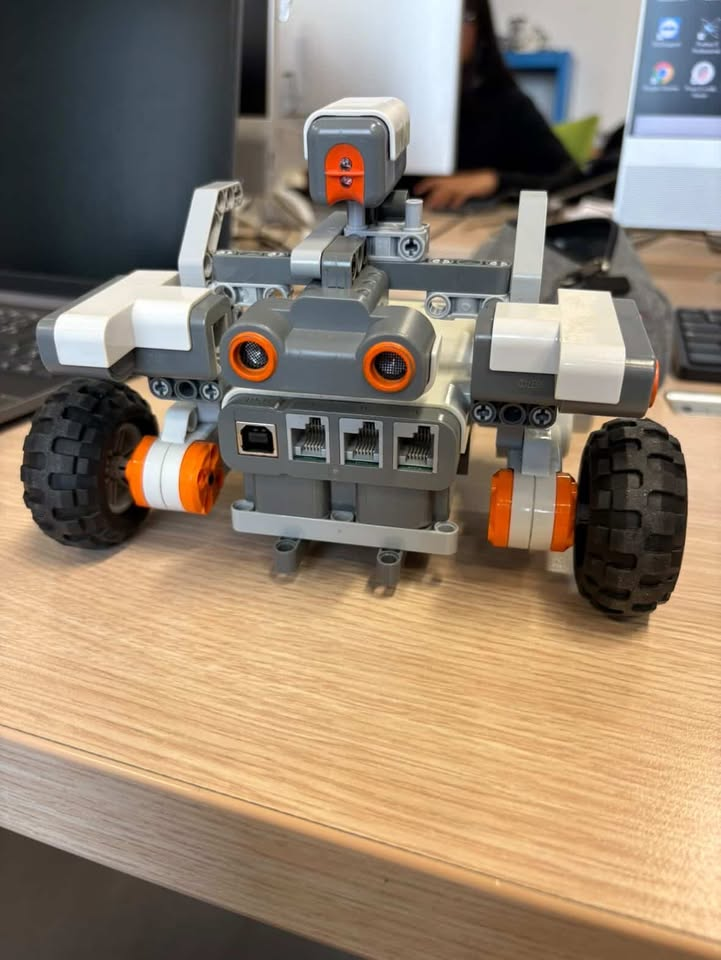
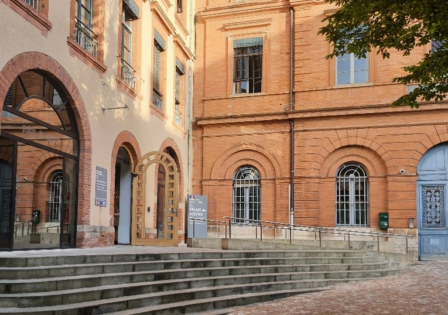
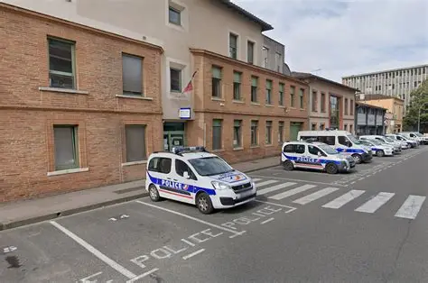

Suivez-moi


Antoine Lemée
Au cours de l’année, j’ai participé à différents projets académiques notamment la conception et la programmation d’un robot pour une course d’obstacles. J’ai particulièrement apprécié la partie programmation sur les capteurs pour détecter les obstacles et suivre une source lumineuse.

Au cours de ces dernières années, j’ai réalisé plusieurs stages d’observation
dans différents environnements professionnels, notamment dans l’informatique et les institutions publiques.
Au sein du service informatique de la DREETS Occitanie, j’ai pu découvrir l’organisation des systèmes d’information d’une administration publique et participer à certaines tâches liées au support technique et à la gestion du parc informatique, tout en travaillant avec les agents du service pour résoudre des incidents.
J’ai également effectué un stage d’observation au tribunal judiciaire, qui m’a permis de découvrir le fonctionnement d’une institution judiciaire, notamment le déroulement des audiences, les différentes procédures ainsi que le rôle des magistrats et des greffiers.

Enfin, j’ai réalisé un stage d’observation au commissariat de police de Montauban. Cette expérience m’a permis de découvrir le quotidien des forces de l’ordre, d’observer certaines interventions, ainsi que le travail d’accueil du public et la gestion des plaintes.
